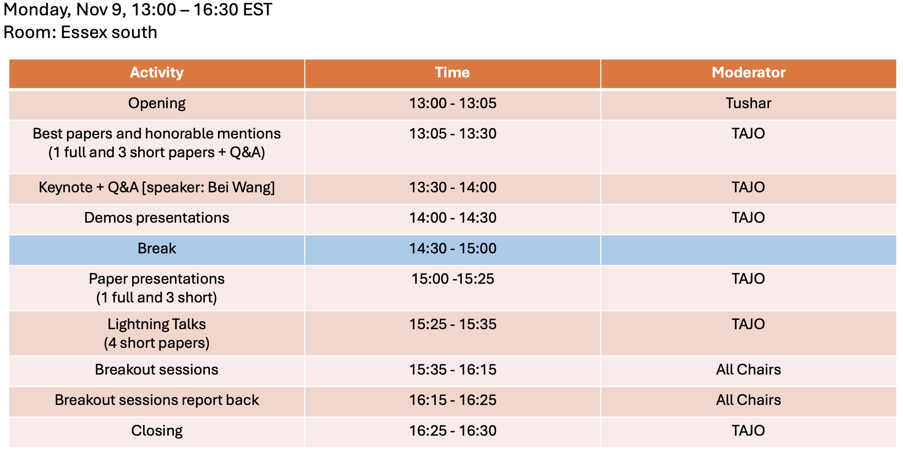

Program

Keynote
- Dr. Bei Wang Phillips, Associate Professor, University of Utah
- Title: Visualizing Uncertainty in Topological Descriptors: From Robust Features to Trustworthy Discovery
- Abstract: Topological descriptors, including persistence diagrams, merge and contour trees, and Morse complexes, provide compact and expressive representations of structure in complex scientific data. However, these descriptors are shaped by uncertainty arising from measurement noise, limited sampling, ensemble variability, modeling assumptions, and analysis choices. When such uncertainty is not visible or interpretable, topology-based analysis can imply a level of confidence that the data and computational pipeline do not support. This talk explores how uncertainty visualization can connect mathematically grounded topological descriptors with the practical reasoning needs of domain scientists. I will discuss approaches for quantifying, visualizing, and interactively exploring uncertainty in topological features, with attention to how feature significance, correspondence, and stability vary across data and parameter choices. The central premise is that uncertainty should not be treated as an error bar added after topological analysis; rather, it is a structured, multiscale property of both the data and the analytical process. By integrating topology, geometry, statistics, and interactive visualization, we can create uncertainty-aware topological representations that support comparison, explanation, and more trustworthy scientific discovery.
- Bio: Dr. Bei Wang Phillips is an Associate Professor in the Kahlert School of Computing, an Adjunct Associate Professor in the Department of Mathematics, and a faculty member of the Scientific Computing and Imaging (SCI) Institute at the University of Utah. She received her Ph.D. in Computer Science from Duke University. Her research lies at the intersection of topological data analysis, data visualization, and computational topology. She develops and integrates topological, geometric, statistical, data mining, and machine learning methods with visualization to enable scientific discovery from large, complex data. Her work has been supported by the NSF, NIH, and DOE. Dr. Phillips received a DOE Early Career Research Program Award in 2020, an NSF CAREER Award in 2022, and the Presidential Early Career Award for Scientists and Engineers (PECASE) from President Biden in 2024, the highest honor bestowed by the U.S. government on early-career scientists and engineers.
Paper Presentations [Best Paper and Honorable Mention]
Each full paper presentation will be 7 mins including Q&A. Each short paper presentation will be for 6 mins including Q&A.
- 1[Best Paper 🏆] Subham Sah, Alireza Karduni, Doug Markant, and Wenwen Dou, "Prediction market visualizations, betting, and uncertainty: A study of Reddit Posts and Comments" [Full paper, 1:05pm-1:12pm].
- 2[Best Paper 🏆] Vrushali Koli, Yi Meng, Eugene P. Deess, and Aritra Dasgupta, "Similar Ratings, Different Consensus: Visualizing Agreement Uncertainty in Survey Data" [Short paper, 1:12pm-1:18pm].
- 3[Honorable Mention 🎗]Timbwaoga A. J. Ouermi, Nina M. Gottschling, Alex Gorczowski, and Tushar M. Athawale, "Distribution-Agnostic Isocontour Confidence Bounds for Robust Uncertainty Visualization of Scalar Field Data" [Short paper, 1:18pm-1:24pm].
- 4[Honorable Mention 🎗]Xinyuan Yan, Jixian Li, and Bei Wang, "LoCoMapper: Local Structural Uncertainty Analysis of Mapper Graphs under Cover Perturbations" [Short paper, 1:24pm-1:30pm].